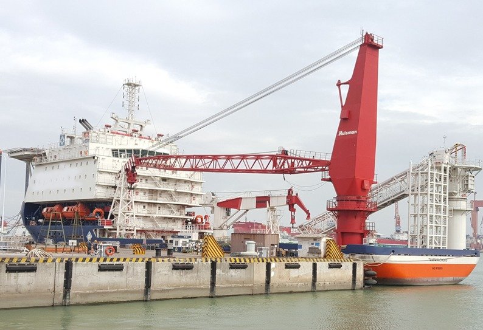

Vessel requirements
Charter, sales, and rental enquiries across offshore and marine vessel categories.
Bring offshore engineering and marine-support requirements into one conversation. Explore vessel charter, sales and rental enquiries, alongside partner-supported ship repair, conversion, and marine engineering work.

Offshore & Marine · Capability imageryMarine operations call for the right vessel, equipment, and technical scope. Alliance's service offering includes discussion of lift boats, offshore support vessels, accommodation vessels, tugs and barges, dredgers, and LNG-related vessels. Each enquiry is assessed around the intended operation and project requirements; vessel availability, specifications, and commercial arrangements are established for the particular scope.
Charter, sales, and rental enquiries across offshore and marine vessel categories.
Partner-supported ship repair, conversion, and offshore engineering requirements.
Discuss tug and barge, accommodation, lifting, dredging, and LNG-vessel needs.
The right starting point is a shared understanding of your project.
Share the operating area, task, duration, and technical requirements.
Clarify vessel type, capacities, and project-specific constraints.
Discuss the available approach and information needed to progress.
The gallery illustrates vessel and equipment categories. Contact Alliance to discuss availability and specifications.
Yes. Include the vessel category, operating area, duration, and required capabilities.
Alliance's marine scope includes partner-supported ship repair and conversion. Share the vessel type and proposed work to start a discussion.